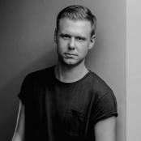

Армин ван Бюрен — нидерландский музыкальный продюсер и диджей. Является обладателем многих именитых наград, включая ТОП 100 DJ по версии DJ Magazine, профильных наград Trancepodium и других. Занимал первое место по фанатскому голосованию в DJ Magazine с 2007 по 2010 год, и 2012 год
«Скрябин» — музыкальный проект украинского музыканта Андрея Кузьменко. Группа была основана в 1989 году и первоначально состояла из четырёх участников. На протяжении всего творчества коллектив претерпел значительные изменения — от электронной альтернативы и дарквейва к поп-року